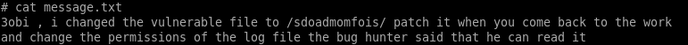

xA01 writeup
This is an official writeup for xA01 room on TryHackMe.
Let's start by doing some reconnaissance about the target machine using nmap
We see that there are 3 opened ports (21:ftp, 22:ssh, 80:http)
Nmap is telling us that we can login into ftp as anonymous. so let's try! 🤓
There is a file with name “message.txtâ€. let's get it and read it content

Hmmm, interesting infos...
Let's take a look at the http server
There is nothing important... Navigating to the directory path founded in the previous file (/sdoadmomfois/)
We have two buttons that lead to "/view.php?file=hint†and “/view.php?file=flag†respectively
When we click either one we get a blank page
The parameter included (file) looks like it tries to view a file from the server
Let's try some LFI payloads
I'll try to read the passwd file located in “/etc/passwd"
Finally, after some tries, we get the output of the file using this path “../../../../../etc/passwdâ€
Moving to “message.txtâ€, it said to “3obi†to change permissions of the log file because it is readable
So we know that the web is running apache2 server and it log file is located in “/var/log/apache2/access.logâ€
Let's read it :)
It works, it's readable!
let's try to add this code execution (
<?php system($_GET['cmd']);?>) to the log file by requesting itbut this time we'll use netcat
Good job!
Let's add now cmd parameter to the url and inserting “id†command
it works! we're running as “www-dataâ€
let's replace id command by a reverse shell
and it works! we get a foothold into the machine
Hmmm, there is a user called “3obi†in home directories
after listing it content by running “ls -la†including hidden files
we get the first flag and there is a hidden file “.secret†which it contains the password of “3obiâ€
let's login as “3obi†using ssh
we're “3obi†now and we need to get root privileges
Running “sudo -l†reveals that we can execute “/usr/sbin/arp†as root without a password
Let’s use it to get an elevated shell
GTFOBins said that we can read any file using arp
Hmmm, can we read the shadow file located in “/etc/shadow†and cracked root hash. Let's see!
We get it. Let's cracked it now using John the Ripper
First of all, we must create a file including the hash and run the command below:

Finally, we get root password and we can read the root flag “root.txtâ€
Thanks for reading, hope you learned something :)
Enjoy!